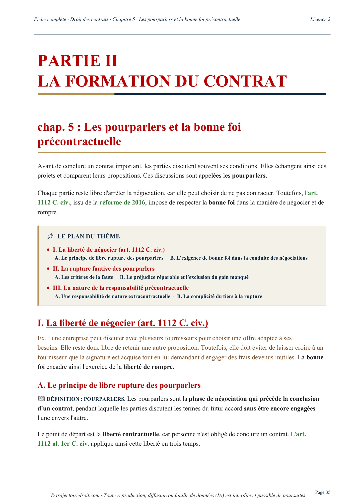
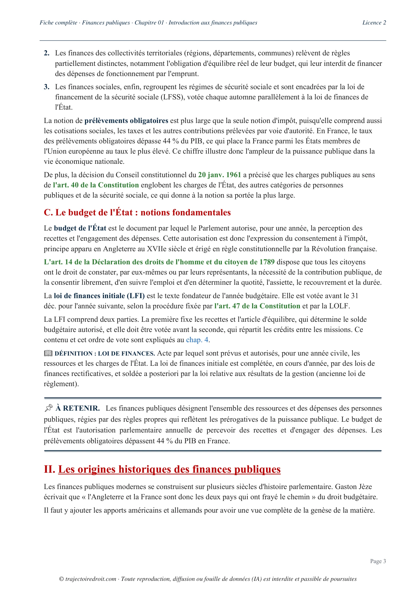
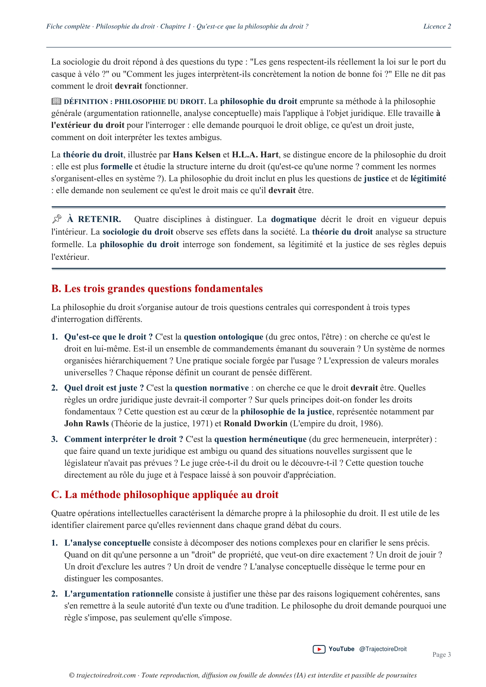

Pack Licence 2 · Fiches complètes en PDF
Tes fiches de droit
pour la L2
Le pack réunit 8 fiches complètes pour la L2, dont celles de finances publiques et de philosophie du droit. Chaque fiche explique les règles et donne leurs références juridiques. Son plan indique l’ordre des chapitres. Il permet ainsi de retrouver le passage à revoir. Pour six fiches, les cartes mentales montrent ensuite les liens entre les notions.
À l’unité, les huit fiches coûtent 119,92 €. Le pack coûte 79 €, soit 40,92 € de moins.
Paiement sécurisé par Stripe. Tes liens de téléchargement arrivent par email après le paiement.
Voir les extraits des fiches
Le contenu exact
Les fiches que tu reçois
La fiche complète de droit pénal général L2 explique l’infraction et la responsabilité pénale. Elle traite aussi des peines et de leur exécution. Compare le sommaire avec le programme de ta faculté.
- 01
Droit administratif
L2 · Semestre 1
- 02
Droit administratif
L2 · Semestre 2
- 03
Droit des contrats / des obligations
L2 · Semestre 1
- 04
Responsabilité civile / obligations
L2 · Semestre 2
- 05
- 06
Droit pénal général L2
L2 · Sur un ou deux semestres selon ta faculté
- 07
Finances publiques
L2 · Semestre 1
- 08
Philosophie du droit
L2 · Semestre 1
Chaque fiche a son plan. Le pack comprend aussi les cartes mentales de six fiches. Tu reçois donc 22 fichiers PDF.
Extraits réels des PDF
Tu peux lire les fiches avant d'acheter
Ces pages proviennent des fiches du pack. Elles montrent comment les règles sont expliquées et comment les références juridiques sont mises en couleur. Clique sur une page pour l'ouvrir en grand.







Tu peux enregistrer les PDF sur ton appareil. L'impression est aussi possible pour travailler sur papier.

Julien · Trajectoire Droit
Des fiches rédigées pour les étudiants en droit
Je suis diplômé d'un Master II de droit pénal à Panthéon-Assas. J'ai accompagné plus de 620 étudiants en cours particuliers, et ces fiches prolongent ce travail d'explication.
Dans les aperçus, tu peux voir la place donnée aux définitions et aux exemples. Les articles et les décisions de justice sont aussi repérés en couleur, afin que tu les retrouves pendant tes révisions.
Lire les témoignages sur mon accompagnementAvant ton achat
Les informations utiles
Qu'est-ce que je reçois après le paiement ?
Tu reçois par email les liens vers les 22 fichiers PDF du pack. Chaque fiche a son plan. Le pack comprend aussi les cartes mentales de six fiches.
Est-ce un abonnement ?
Tu paies 79 € une seule fois et tu conserves tes PDF. Tu peux ainsi les relire pendant toute ton année, puis les garder pour la suite de tes études.
Le pack correspond-il à ma faculté ?
Vérifie les matières dans la liste des fiches. Leur répartition par semestre varie selon les facultés.
Puis-je lire les PDF sur mon téléphone ?
Tu peux ouvrir les PDF sur un ordinateur, une tablette ou un téléphone équipé d'un lecteur PDF. L'impression est également possible pour ton usage personnel.
Comment contacter Julien ?
Tu peux m'écrire à julien.prof1@gmail.com, notamment si tu as une question sur une matière du pack ou sur tes téléchargements.
Pack Fiches L2
Les 8 fiches et leurs annexes
Tes PDF à télécharger après l’achat.